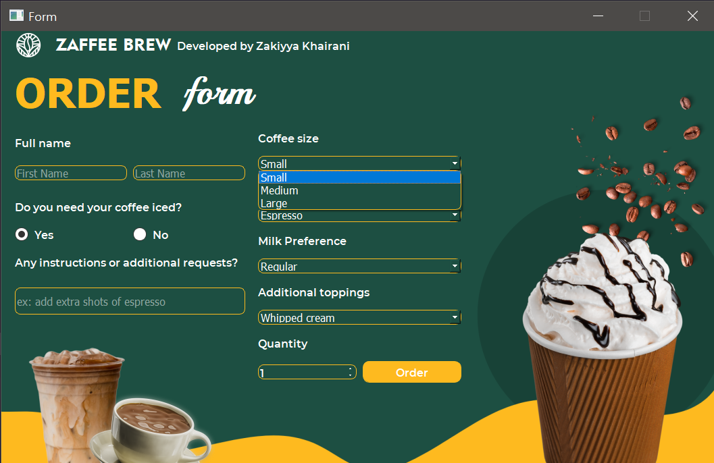
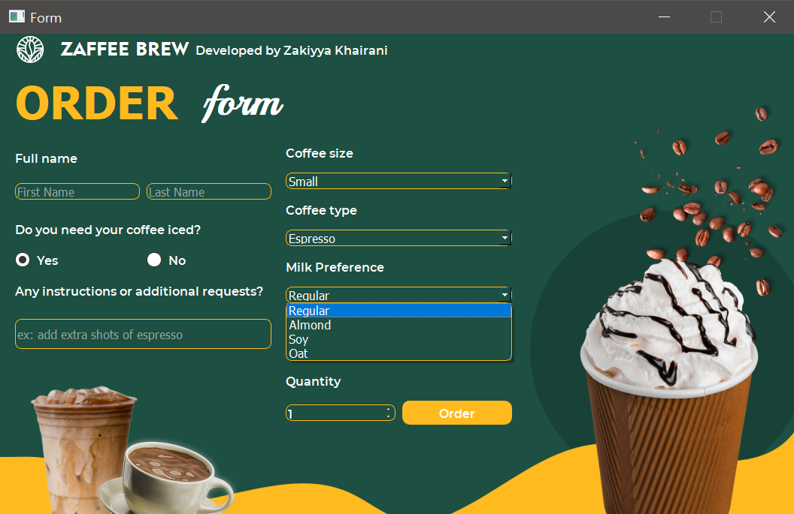
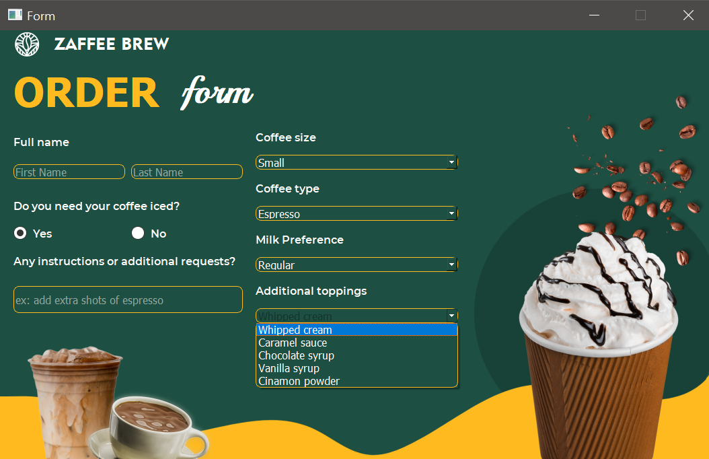

Code Form Python
.png)
.png)
.png)
.png)
.png)
.png)
.png)
.png)
.png)
.png)
.png)
.png)
.png)
.png)
output :



Penjelasan nomor 1,
Desain Form Python formulir pesanan kopi "ZAFFEE BREW" memiliki tema dan tujuan yang jelas dan relevan, yaitu pemesanan kopi. Antarmuka ini dirancang dengan mudah dipahami dan diikuti oleh pengguna. Tujuan utama dari antarmuka ini adalah untuk mengumpulkan informasi yang diperlukan dari pengguna untuk memproses pesanan kopi mereka. Antarmuka ini dibagi menjadi beberapa bagian, setiap bagian memiliki tujuan tersendiri.
Warna yang digunakan dalam user interface ini adalah #1D4F42 dan #FDB91F. Warna #1D4F42 atau hijau gelap ini dapat memberikan nuansa alam atau alami, yang cocok dengan tema kopi karena sering kali dikaitkan dengan warna daun kopi yang segar. Penggunaan warna ini dalam antarmuka pemesanan kopi dapat memberikan kesan yang menenangkan dan bersahabat, serta menghadirkan aspek organik atau alamiah.
Selanjutnya warna #FDB91F atau kuning cerah ini menciptakan kesan energi dan keceriaan. Dalam konteks antarmuka pemesanan kopi, penggunaan warna ini dapat memberikan sentuhan yang segar dan menarik perhatian, mungkin untuk menyoroti elemen-elemen penting seperti tombol "Order".
Berikut ini adalah menu-menu yang ada di dalam user interface pemesanan kopi:
- Full Name
Bagian ini mengumpulkan nama pengguna untuk keperluan identifikasi dan komunikasi.
- Do you need your coffee iced?
Pertanyaan ini membiarkan pengguna menentukan apakah mereka mau kopi dingin atau panas, memenuhi preferensi pengguna dengan memilih "Yes" jika dingin dan "No" jika panas.
- Coffee Size
Pengguna dapat memilih ukuran kopi "Small", "Medium", atau "Large" sesuai dengan kebutuhannya dan preferensinya.
- Coffee Type
Bagian ini memperbolehkan pengguna memilih jenis kopi yang diinginkan, yaitu "Espresso", "Americano", "Mocha", "Cappuccino", atau "Latte".
- Milk Preference
Pengguna dapat menentukan apakah mereka mau susu jenis apa dalam kopi mereka, memungkinkan pesanan yang lebih personal. Pilihan susu yang tersedia yaitu "Regular", "Soy", "Almond" atau "Oat"
- Any instructions or additional requests
Bagian ini menyediakan ruang untuk pengguna menambahkan instruksi atau permintaan khusus, meningkatkan kepuasan pengguna.
- Additional Toppings
Pengguna dapat menambahkan topping sesuai keinginan dengan memilih topping yaitu "Whipped Cream", "Caramel Sauce", "Chocolatte Syrup", "Vanilla Syrup", atau "Cinamon Powder"
- Quantity
Menambahkan jumlah minuman dengan kostumisasi yang sama dengan yang sudah dipilih, apabila ingin menambah jumlah dengan kostumisasi berbeda maka harus order dulu lalu nanti masuk ke order form kembali
- Tombol "Order"
Tombol ini berfungsi untuk mencatat semua input yang akan dipesan ke dalam database